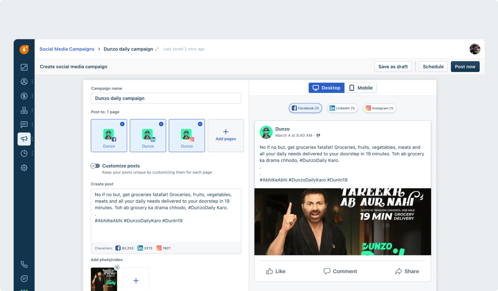

Marketers inside Freshworks' suite were stitching together a scheduler, a design tool, and email threads to ship a single campaign. Posts existed, campaigns didn't. As the sole designer on a one-month timeline, I took the flow from a six-tool competitive teardown to engineering handoff, cutting a measured two-hour creation task to under twenty minutes.

The final creation screen: campaign name, post to multiple pages, customise per page, and a live desktop and mobile preview of the post as it will appear on each platform.
Every existing flow treated a post as the unit of work. But marketing teams don't think in posts, they think in campaigns: a goal, a set of coordinated posts across pages and platforms, and a result they report upward. The tooling forced them to hold the campaign in their head, or in a spreadsheet.
Drafting in a design tool, copy in a doc, scheduling in a third product. Publishing one post meant context-switching across three surfaces, with approval happening over email.
Was the campaign scheduled, published, or stuck in draft? No screen answered that. Status lived in the marketer's memory and in Slack threads, and performance lived in platform exports.
We timed the existing multi-tool process with a marketer: roughly two hours from brief to a scheduled multi-platform post. The cost wasn't effort, it was campaigns that never shipped.
⚡ Constraint: one month, one designer, scope locked. Five phases, research to final design, with every research method having to pay for its calendar time. No phase got a second week.
The market split cleanly in two: post-management tools (Ryzely, Publer, Later, Zoho Social) and comprehensive campaign suites (Mailchimp, HubSpot). I walked the full creation-to-publish flow in all six and scored them on a feature matrix: multiple post creation, live preview, character limit validation, and media upload support.
Full creation-to-publish walkthrough in each, scored on a four-row feature matrix. Answered: where does every tool break down, and what does nobody solve?
Timed a marketer running the existing multi-tool process end to end, brief to scheduled post. The ~2 hour result became the benchmark every iteration was tested against.
Task-based sessions with practising marketers at iteration 1 and iteration 3, same task, same timer. Answered: does the design actually reduce the load, or just look like it does?


The matrix that set the brief. Multiple post creation: only Publer and HubSpot. Live preview: four of six. Character limit validation: zero of six.
Only Publer and HubSpot supported creating the same post across multiple pages, and both buried it. The rest forced page-by-page repetition. Campaign-level coordination didn't exist anywhere.
Later and Zoho Social had no preview at all. The four that did showed a generic render, not how the post would actually appear per platform, per device. Marketers published on faith.
Not one tool validated content against each platform's character limits before publish. Posts silently truncated or failed on the platform's side. This gap was free to own, and it shaped both the composer and the error-state designs.
Research centred on a medium-sized e-commerce marketing team, where a campaign passes through three pairs of hands: the manager who owns the outcome, the designer who makes the creative, and the content creator who writes and ships the posts. Each shaped a structural decision in the product.
Early sketches explored two flows on paper: connecting social media platforms, and creating a campaign across them. Linear vs modular approaches were tested before anything reached Figma, and every iteration after that was annotated with what it still got wrong.

The two sketched flows: connecting platform accounts, and creating a campaign across them.

Low-fidelity wireframes locking the composer, page selection, media gallery, and preview layout. Validated with the PM and engineers before high-fidelity work.

Iteration 1 put everything on one screen with no way to switch between social platforms and no option to clone a post. Iteration 2's fix made creating multiple posts take far too many clicks.
Both versions treated each post as separate work. The annotations tell the story: "no option to switch between social platform," "no option to clone the post," "creating multiple posts needs a lot of clicks."
"Post to" page cards at the top of one composer: add Facebook, Instagram, and LinkedIn pages, write once, and post to all of them in a single click. A customise-posts toggle opens per-page editing only when content needs to differ.


Iterations 2 and 3 shipped without a live preview. Review annotations flagged it both times: "no live preview," alongside "no option to delete the post."
In sessions, marketers kept asking "how will this look?" while typing. Four of six competitors had some preview; the two without it felt the most uncertain to use. We were repeating their worst gap.
A split layout: composer on the left, live preview on the right, with platform tabs (Facebook, LinkedIn, Instagram) and a desktop/mobile toggle. The preview renders the post as each platform will actually display it, updating as users type.

Following the market: no character validation. Every one of the six tools we tore down let users publish first and find out later.
Posts truncated or failed silently on the platform's side. The same caption has different ceilings on Facebook, LinkedIn, and Instagram. The research matrix showed this gap was universal, which made it the cheapest trust win available.
Per-platform character counters inside the composer, counting against each platform's limit simultaneously. Overflow flags the specific platforms exceeded before save, with the exact overage shown. The one feature no competitor had.

Create a multi-platform campaign in a single click: page cards across Facebook, Instagram, and LinkedIn, customise per page, per-platform character counters, media gallery, live desktop and mobile preview, and save as draft, schedule, or post now. Approved at design review and handed to engineering in week 3.
A creation flow is only as good as its error handling, and the research finding that no tool validated content made this section the differentiator. Every limit is specific, surfaced before publish, and tells the user exactly what to fix.

The validation layer: character overflow per platform, page pagination at scale, gallery and file-size limits, video runtime rules, and upload states with retry.
The composer counts against Facebook, LinkedIn, and Instagram limits simultaneously. Exceed one and the error names the platform and the exact overage, before save, not after a silent truncation.
Image size capped at 5MB across all three platforms, a maximum of 10 images per gallery upload, and video runtime validated against the strictest platform in the post: 10 minutes for Facebook and LinkedIn, 1 minute when Instagram is included.
Multi-file uploads show per-file progress, time remaining, and pause. A failed file states the reason — photo size, video length, format — with a one-tap retry. One failure never blocks the rest of the batch.
The same task that set the baseline was re-run on the final design in a moderated walkthrough: Prem, a Digital Marketing Manager at Dunzo Daily, connecting his Facebook pages, composing one post for three Dunzo pages, attaching creative from the media gallery, previewing per platform, and scheduling — then tracking the published campaign's impressions and interactions from the campaign list.
Brief to scheduled multi-page campaign in the final timed walkthrough, against the ~2 hour baseline across three tools. Performance one click from the campaign list. No exports, no spreadsheets.
Approved at design review and handed to engineering with edge cases and error states specced. Shipped within the one-month window with no design rework during build.
Sole designer across research, strategy, sketches, wireframes, four high-fidelity iterations, edge cases, and handoff. Every artifact on this page was produced inside the same month.
The full walkthrough: connect Facebook, add Dunzo pages, compose once for all pages, upload from the media gallery, preview on Facebook, LinkedIn, and Instagram, schedule, campaign published with impressions, interactions, and per-platform post review.
Character limit validation scored zero across all six competitors.
The teardown matrix was meant to tell us what to match. Its most useful row told us what to own: not one tool validated content against platform limits before publish. That single empty row became the per-platform character counters in the composer and an entire validation layer in the edge-case designs. The cheapest differentiator is the gap everyone shares.
Each iteration was reviewed with its failures written directly on the screen.
"No option to switch between platforms." "Creating multiple posts needs a lot of clicks." "No live preview." Instead of vague feedback rounds, every review produced specific annotations pinned to the design, and each became the brief for the next iteration. Four iterations in three weeks was only possible because the criticism was this concrete.
Character limits, media caps, and video runtimes shift whenever a platform changes its rules. Keeping that logic configurable rather than hardcoded meant updates without a full redeploy. I'd push this even further from day one.
The sessions that exposed iteration 1 happened in week 2. Running them in week 1, against the sketches, would have saved a full high-fidelity pass.
The structured flow was the right call for launch, but power users who run campaigns daily need shortcuts: clone a past campaign, skip straight to scheduling. That escape hatch should have been in the v1 spec, not the backlog.